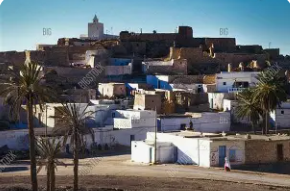
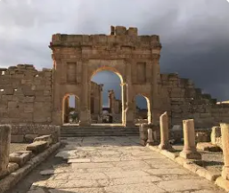
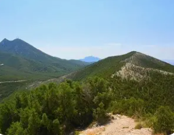
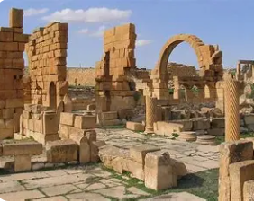

La Porte du Centre-Ouest

Kasserine est un gouvernorat situé dans le centre-ouest de la Tunisie, à la frontière avec l'Algérie. C'est une région montagneuse et rurale, dominée par le djebel Chambi, point culminant de la Tunisie à 1 544 mètres d'altitude.
La ville de Kasserine, chef-lieu du gouvernorat, est un centre urbain entouré de montagnes et de forêts de pins. La région est connue pour son climat continental rigoureux avec des hivers froids et neigeux.
Le gouvernorat se distingue par sa nature montagneuse préservée, son parc national du Chambi, son patrimoine romain avec le site exceptionnel de Sbeitla, et ses paysages alpins uniques en Tunisie.
Point culminant de la Tunisie à 1 544 mètres, abritant un parc national avec forêts de pins d'Alep, faune sauvage et sentiers de randonnée. Neige en hiver.
Site archéologique romain exceptionnel avec trois temples du Capitole parfaitement préservés, forum, arc de triomphe et basiliques chrétiennes magnifiques.
Vastes forêts de pins, chênes verts et genévriers. Région la plus boisée du centre tunisien avec une flore et faune diversifiées.
Important élevage ovin dans les montagnes, production de viande et de laine. Agriculture de montagne avec céréales et arboriculture fruitière.

Ville romaine exceptionnelle du IIe siècle avec ses trois temples du Capitole uniques en Afrique du Nord, dédiés à Jupiter, Junon et Minerve. Le site comprend également un arc de triomphe, des thermes, un théâtre et de superbes basiliques byzantines.

Créé en 1980, ce parc protège le point culminant de la Tunisie et ses écosystèmes montagnards. Forêts de pins d'Alep, faune sauvage (gazelles, porcs-épics, aigles), sources naturelles et paysages spectaculaires.

Site archéologique romain et byzantin à la frontière algérienne. Vestiges impressionnants : arc de triomphe de Septime Sévère, basiliques, citadelle byzantine et mausolées. Témoignage de l'importance militaire de la région.